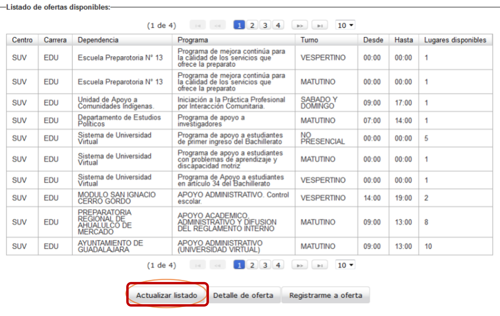

¿Qué es la unidad de servicio social?
La Unidad de Servicio Social está adscrita a la Coordinación de Extensión y Acción Social de la Universidad de Guadalajara y es la responsable de coordinar, diseñar, evaluar y validar el servicio social de la Red Universitaria y escuelas incorporadas.
Nota: En la coordinación de la carrera no se realiza ningún trámite de servicio social.
Requisitos para solicitar y participar en el servicio social
Documentos:
¿Cuándo se puede hacer el servicio social?
Los horarios dependen de la institución y el programa en que se realiza el servicio social. Se deben realizar 4 hrs diarias y 20 hrs a la semana.
Convocatoria Servicio Social 2024-A.
Proceso para solicitar y participar en el servicio social
Ingresar a ss.siiau.udg.mx e iniciar sesión. Insertar código y contraseña con los que ingresas a SIIAU Escolar.
Se pide actualizar y corroborar datos generales.
Nota: En caso estar trabajando hay que marcar con “Sí” y agregar nombre y teléfono de la empresa.
Si se confirmo el registro en el sistema aparecerán 2 notificaciones. Hay que volver a iniciar sesión.

Iniciar el pre-registro. Alumno/ Aspirante/ Registro.
Revisar que los datos sean correctos y dar clic en “Registrar”. Nota: Si cuentas con más del 60% de los créditos, en la parte inferior de la pantalla estará la leyenda “Ya cumples con el requisito necesario para realizar tu servicio social”.
Orden de pago
Imprimir orden de pago. Alumno/ Aspirante/ Orden de pago. Importante pagar en ventanilla o practicaja, se necesitará el voucher para continuar con el proceso.
Fechas y duración del servicio social
240 hrs:
Bachillerato Técnico Terminal
480 hrs:
Técnico Profesional medio y superior universitario
Licenciaturas
1 año:
Medicina
Odontología
Enfermería
Nutrición
Enfermería del nivel técnico
Quedan exceptuados de prestar servicio social las personas mayores de sesenta años y las personas con algún tipo de impedimento que cuyas capacidades diferentes les impida la prestación del servicio social.
¿De qué trata el servicio social?
El Servicio Social es una actividad de aplicación de conocimientos, la cual es temporal y obligatoria.
Es el lugar dentro de la escuela donde encontrará lo más parecido a un ambiente laboral real, ya que habra presion y responsabilidades.
Dependiendo de donde se elija puede fortalecer una buena formación académica.
De acuerdo con la visión de la Universidad de Guadalajara, el servicio social debe atender dos ámbitos:
I. El Académico que le permite al estudiante llevar a la práctica los conocimientos que se han adquirido al tiempo que complementa su formación teórico-profesional.
II. El Social mediante el cual, el alumno puede acercarse a las comunidades de mayor rezago social, apoyar con sus conocimientos profesionales, sensibilizándose y obteniendo una serie de valores humanos y sociales que consolidan su formación integral y de excelencia.
Por normatividad el servicio social únicamente puede prestarse en instituciones de carácter público o de asistencia social, por lo que quedan excluidas las empresas u organismos con fines de lucro.
¿Por qué se realiza el servicio social?
La prestación del servicio reintegra a la sociedad parte de los apoyos que el estudiante recibe para su formación profesional.
Es un requisito indispensable para la titulación de los programas educativos de licenciatura.
¿Dónde se puede hacer el servicio social y cómo tramitarlo?
Cuando los programas de servicio social han sido revisados y validados por el Sistema de Universidad Virtual, estos serán visibles en el Sistema de Administración de Servicio Social (SAAS).
Con esta publicación de plazas se te hará llegar por correo el periodo en que puedes hacer la elección de plaza de servicio social.
Ingresar a ss.siiau.udg.mx. Dar click en Iniciar sesión.
Insertar código y contraseña con los que ingresas a SIIAU Escolar.
Dar click en Alumno/ Aspirante/ Ofertas Disponibles.
Consultar fechas y hora correspondiente al registro.
Dar click en Actualizar listado.

Seleccionar la plaza de tu interés dando click en Registrarme ahora.
Se desplegará los detalles del programa, una vez seleccionado dar click en Registrarme.
Al registrarte podrás visualizar una ventana que informa tu proceso de registro exitoso.
Proceso del Servicio Social:
1. Registro y Orientación:
2. Elección del Proyecto:
3. Realización del Servicio Social:
4. Documentación y Evaluación:
5. Certificación:
Fundamentos del Servicio Social:
1. Aprendizaje Experiencial:
2. Contribución a la Comunidad:
3. Desarrollo Personal y Profesional:
4. Conexión Universidad-Comunidad:
5. Ética y Ciudadanía: